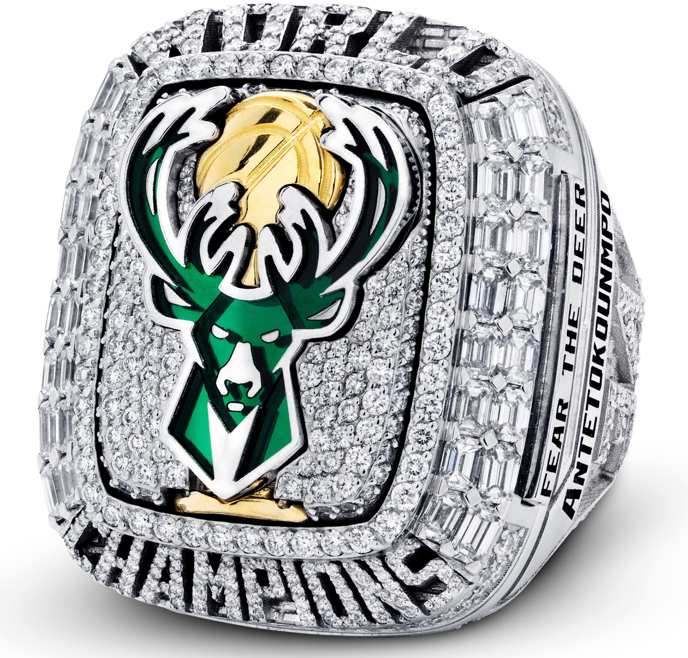
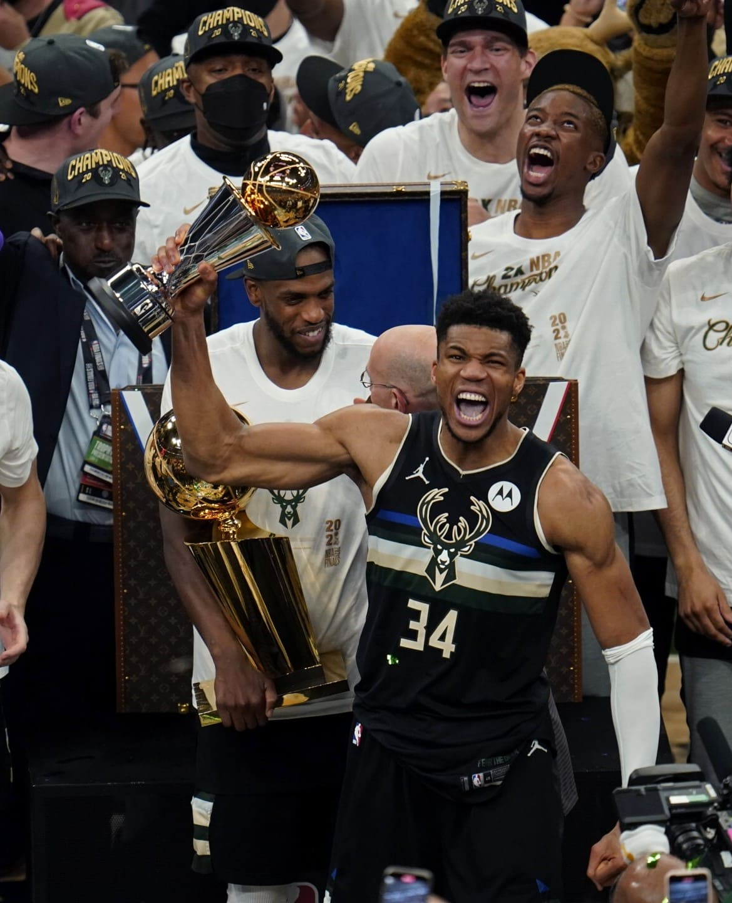

MVP de las Finales

Giannis Antetokounmpo
El pivot de los Milwaukee Bucks Giannis Antetokounmpo conseguía el ansiado anillo para su franquicia siendo el MVP indiscutible de las finales de la NBA y protagonista en el último y definitivo Game 6 de las finales ante los Phoenix Suns en el que el griego firmaría una de las actuaciones más impresionantes de la historia: 50 puntos, 14 rebotes, 2 asistencias y 5 tapones. Sus acciones clave, un tercer cuarto salvaje de 20 puntos y un tapón con el que sentenció el encuentro dieron el anillo a los Bucks.
Sus promedios en las finales fueron de 35,2 puntos, 13,2 rebotes, 5 asistencias, 1,8 tapones, 1,2 robos y 61,8% en tiros de campo (Ningún jugador ha promediado 30-10-5 con al menos 60% en tiro en la historia de las Finales).
Así, Giannis, aumenta aún más su palmares, acumulando a sus 26 años cinco All-Star, cinco All-NBA, cuatro All-Defense, MVP del All-Star 2021, Defensor del Año 2020, Jugador de Mayor Progresión en 2017 y dos veces MVP, a lo que ahora suma el título de campeón.